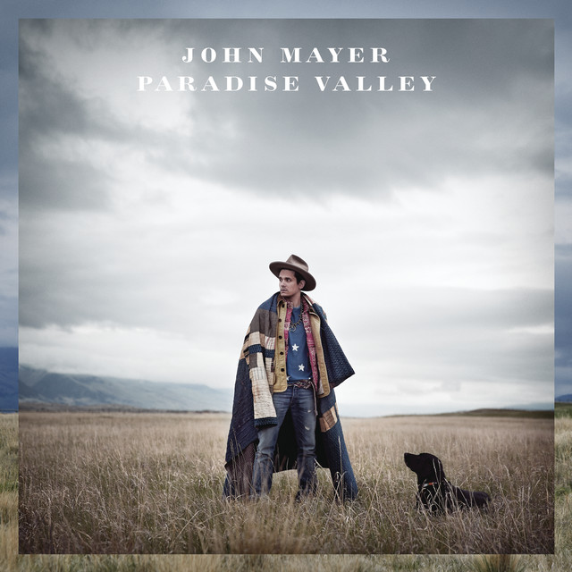
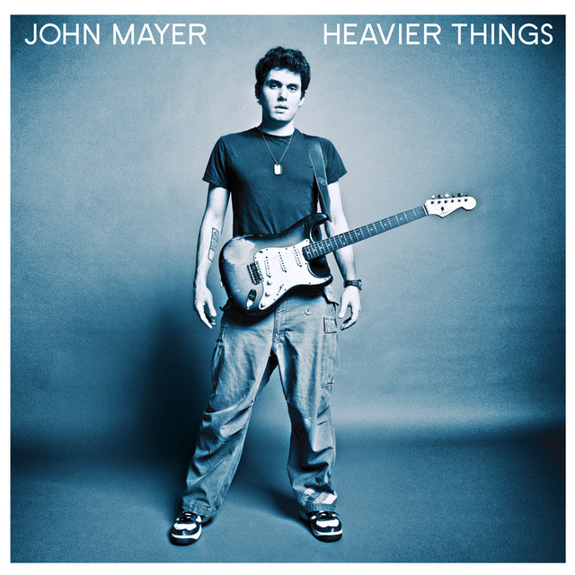

Discografía
Sob Rock

- Lanzado: 16 de julio de 2021 (EE.UU.)
- Sello: Columbia
- Formato/s: LP, CD, descarga digital
The Search for Everything

- Lanzado: 14 de abril de 2017 (EE.UU.)
- Sello: Columbia
- Formato/s: LP, CD, descarga digital
Paradise Valley

- Lanzado: 20 de agosto de 2013 (EE.UU.)
- Sello: Columbia
- Formato/s: LP, CD, descarga digital
Born and Raised
- Lanzado: 22 de mayo de 2012 (EE.UU.)
- Sello: Columbia
- Formato/s: LP, CD, descarga digital
Battle Studies
- Lanzado: 17 de noviembre de 2009 (EE.UU.)
- Sello: Columbia
- Formato/s: LP, CD, descarga digital
Continuum

- Lanzado: 12 de septiembre de 2006 (EE.UU.)
- Sello: Columbia
- Formato/s: LP, CD, descarga digital
Heavier Things

- Lanzado: 9 de septiembre de 2003 (EE.UU.)
- Sello: Columbia
- Formato/s: LP, CD, SACD, DualDisc, Cassette, descarga digital
Room for Squares

- Lanzado: 18 de septiembre de 2001 (EE.UU.)
- Sello: Columbia
- Formato/s: LP, CD, SACD, DualDisc, Cassette, descarga digital